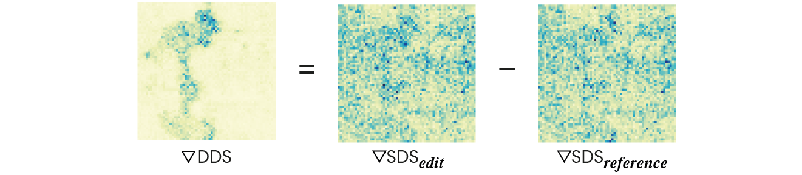

Delta Denoising Score
We introduce Delta Denoising Score (DDS), a novel scoring function for text-based image editing that guides minimal modifications of an input image towards the content described in a target prompt. DDS leverages the rich generative prior of text-to-image diffusion models and can be used as a loss term in an optimization problem to steer an image towards a desired direction dictated by a text. DDS utilizes the Score Distillation Sampling (SDS) mechanism for the purpose of image editing. We show that using only SDS often produces non-detailed and blurry outputs due to noisy gradients. To address this issue, DDS uses a prompt that matches the input image to identify and remove undesired erroneous directions of SDS. Our key premise is that SDS should be zero when calculated on pairs of matched prompts and images, meaning that if the score is non-zero, its gradients can be attributed to the erroneous component of SDS. Our analysis demonstrates the competence of DDS for text based image-to-image translation. We further show that DDS can be used to train an effective zero-shot image translation model. Experimental results indicate that DDS outperforms existing methods in terms of stability and quality, highlighting its potential for real-world applications in text-based image editing.

DDS editing optimization eliminates the noisy component of SDS using a reference SDS estimation.
Replacing the flamingo in the image into a peacock using SDS based optimization results with a blurry background. To eliminate the "bad" component of the SDS gradient, we subtract the SDS gradient of the input image with respect to the input text prompt at each optimization step.


We thank Ben Poole, Elad Richardson, Ron Mokady and Jason Baldridge for their valuable inputs that helped improve this work.